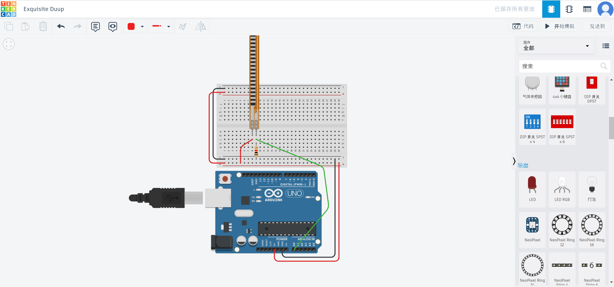
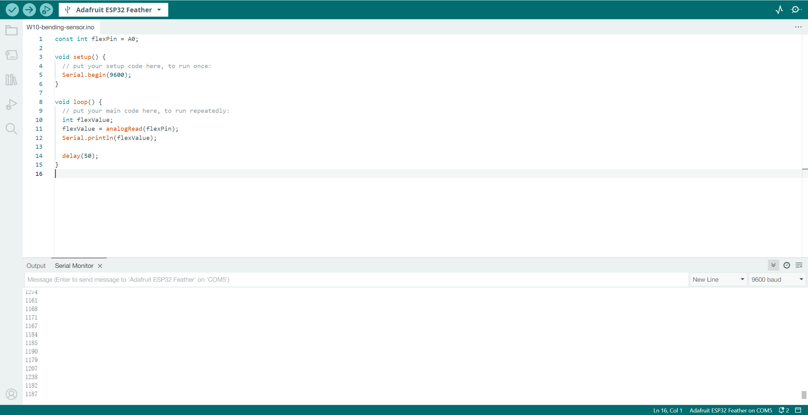
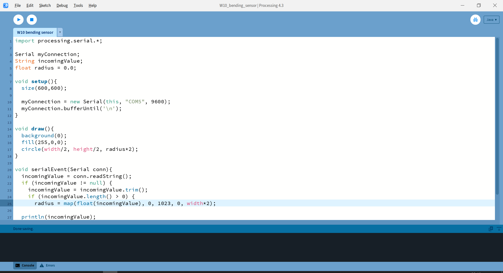
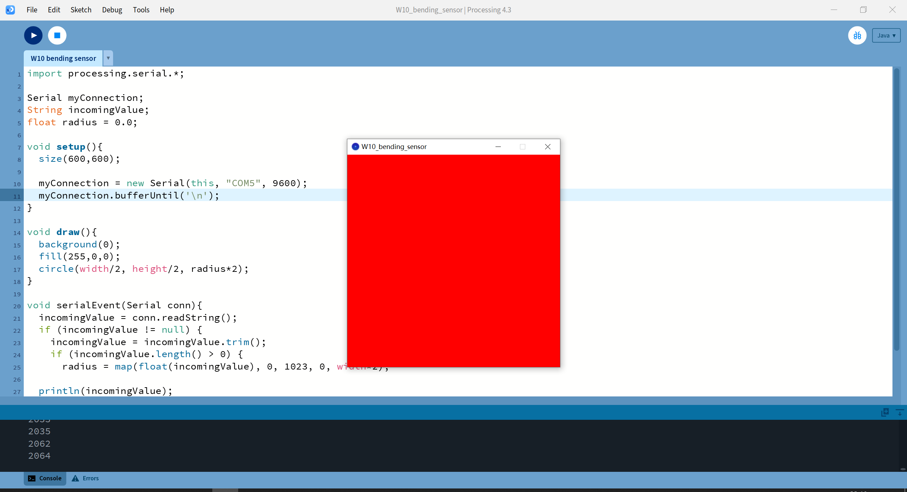
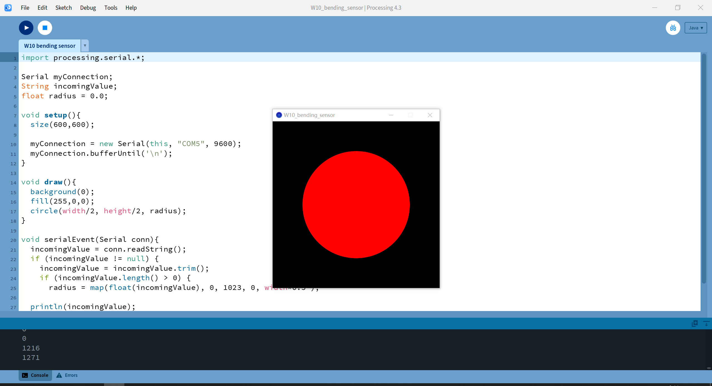

It is the final effect, I want to achieve the effect where the greater the bending of the flex sensor, the higher the resistance, the smaller the input value, and thus the smaller the circle becomes.
1.I used Tinkercad to test the circuit and then applied it.

2.Coding in Arduino.
3.I adjusted the code based on in-class effect in Processing.
4.But I found I forgot to adjust the radius of the circle.
5.It is the final effect.
